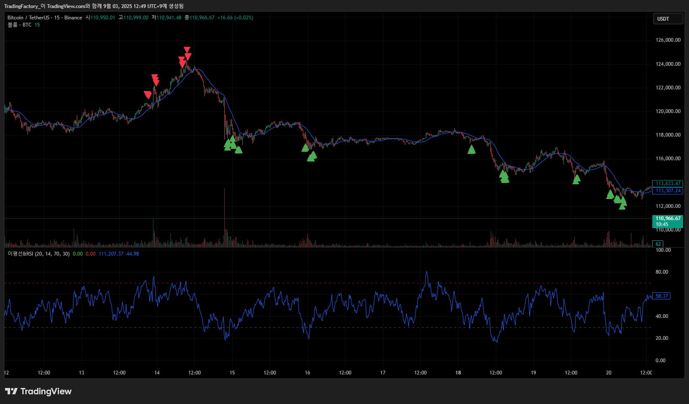
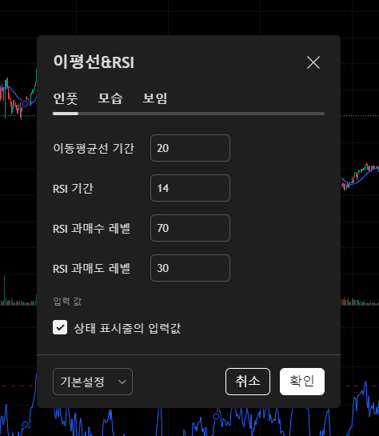

프로젝트 개요
이 프로젝트는 트레이더들이 시장의 추세를 더 쉽게 파악할 수 있도록 이동평균선과 RSI 지표를 결합하여 개발한 맞춤형 지표입니다.
주요 기능
- 매수/매도 신호 발생 시 화살표 표시
- 오버보트(과매수) 및 오버솔드(과매도) 구간 시각화
- 사용자 설정에 따라 지표 변수 값 변경 가능
개발 과정
고객과의 충분한 상담을 통해 원하는 기능을 정확히 파악하고, 파인스크립트 코드를 효율적으로 작성하여 지연 없이 빠르게 신호를 포착하도록 최적화했습니다.
미리보기

